Playground:
Evaluation Criteria:
- It must be safe.
- It must allow children to use their imagination.
- It must be fun.
Concept:
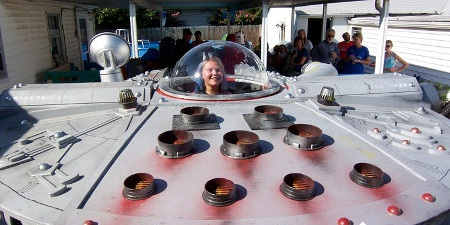
- The playground will incorporate several Star Wars inspired structures and elements. While inspired, they will still be basic enough for children to "figure out" and play around on without the chance of them severely hurting themselves. The main area of the playground will be made up of a soft, rubbery material. It will be colored black with a spacey star pattern all over. Structures for the children to play on will include smaller replicas of star ships such as X-Wings or other walkers such as AT-TEs. The X-Wing will only be able to have one child sit inside of it at a time and be able to see out the clear bubble. Other structures like the AT-TE will be larger to accomodate several children at once, where they can gather to talk, plot their "attack," or just get out of the sun for a while.
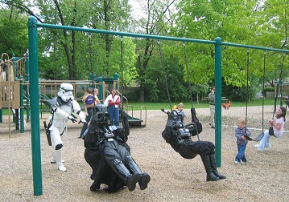
- Other things for the kids to do will include small, bouncy creatures such as Tauntauns for the smaller children, along with a Milennium Falcon merry-go-round. There will be other basic equipment such as a swingset and slides. Benches will be scattered around the perimeter of the playing area for kids to take a break on, or for parents to sit and watch their children. There will be few trees, allowing for some shade, but also for enough open playing room, along with a fence around the perimeter (behind the benches) for safety.
Video Game:
Evaluation Criteria:
- It must allow for some imagination.
- It must be suspenseful.
- It must be challenging.
Concept:
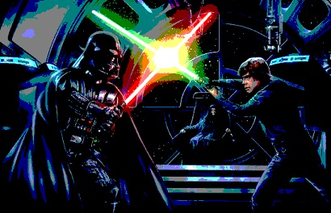
- The video game I hope to make will be a Star Wars fighting game. It will be an "old school" arcade style fighting game with various characters to choose from. You will be able to duel each other one-on-one, either against other players or against the computer. There will be different combo attacks, and attacks will be different depending on the character - some characters will have different lightsabers and will have different Force attacks. There will also be a story mode for single player, and it will allow you to play as different characters to see the story from their point of view, and battle different characters resepctively. In some story mode battles, you will go up against several different enemies at a time, so it won't always be one-on-one.
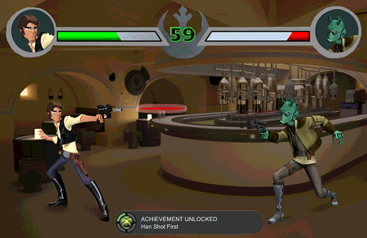
- You also won't just have to play as Jedi. You can also play as other characters such as Han Solo or Princess Leia, and they will be able to fight with guns and blasters. For example, the story may begin in the cantina when you play as Han Solo, and you will have to begin a gun fight with Greedo. The game won't follow much for backstory, or what happened off of the big screen. The stories for each character will mostly follow how you see them and are introduced to them in the movies, so you will only face other characters and enemies from the films.
Museum:
Evaluation Criteria:
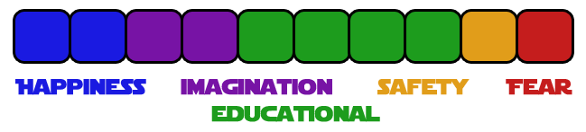
- It must be educational.
- It must be physically engaging.
- It must be mentally engaging.
- It must give enough information to imagine the pieces in action.
Concept:
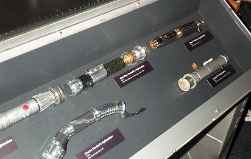
- The museum will be mostly a history museum with some art and some hands-on activities and learning areas. A majority of the museum will be decicated to displaying items such as Jedi lightsabers. It will also have a large section with several decomissioned droids, and will go through a history of droids. Droids will be displayed which are used for different purposes too, including humanoid and non-humanoid ones.
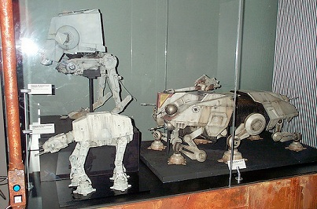
- Other than droids and lightsabers, the museum will house several different ships and walkers. The collection will include mostly mass-produced vehicles such as X-Wings, AT-STs, and small model replicas of items that would be too large to include, such as AT-ATs or the Death Star. Uniforms of different soldiers from the various alliances over time will be displayed as well.
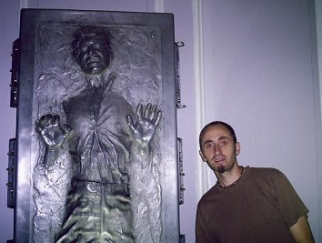
- There will be points where visitors can stop for a photo with different displays, and in some places they will be able to engage with some items. Some items that are allowed to be touched may include some lightsaber hilt replicas, or some vehicles that allow people to climb inside and see what it would be like first hand. Some other hands-on statsions may include a workshop to build your own lightsaber. The museum will also include a small cafe for refreshments, as well a gift shop that sells plushies, toys, mini build your own lightsaber kits, and more.
Theme Park:
Evaluation Criteria:
- It must be safe.
- It must use both natural and man-made elements.
- It must be physically engaging.
- It must have places to relax and eat.
Concept:
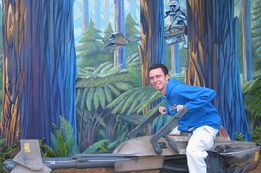
- Dueling Jedi Rollercoaster: Two rollercoasters launch simultaneously to "battle." One coaster represents the Jedi Order, and will be painted green and blue. This coaster will be known for having many more loops, corkscrews, and turns, but won't read top speeds that its rival coaster will. This coaster is all about precision and accuracy. The opposing coaster will represent the Sith, who are also Jedi, but are evil and more concerned with power. Because of this hunger for power the coaster will go much faster than the Jedi one, and will have fewer but more dramatic turns and loops. It will be painted red and black to make it easily distinguishable from the other.
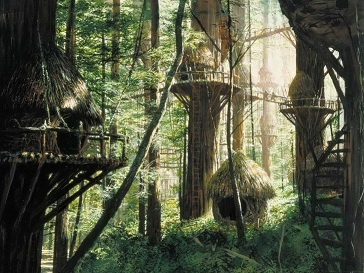
- Ewok Village: The Ewok village will be a place in the park targeted at children. It will mostly be a playground area with both fake and real trees everywhere, allowing for much canopy cover and shade. Some larger trees will be connected with rope bridges and rope tunnels so children can easily get from tree to tree. Inside some of the larger false trees will be places to sit, lookout holes, or small hands-on activites such as large puzzles or tic-tac-toe. On the ground, there will be some more typical playground equipment such as a Death Star merry-go-round, swings, bouncy Guapas (Ewok ponies), and slides.

- Scene Reenactment Show: Your favorite scenes from the original Trilogy are reenacted in this lively show. Beginning with Luke on the moisture farm on Tattooine, all the way to the fight against Darth Vader, major events from the film series will be acted out live in front of an audience. The onlookers will be seated in stadium seating, but the stage will be changing throughout the show depending on the scene being depicted. There will be several showings throughout the day.
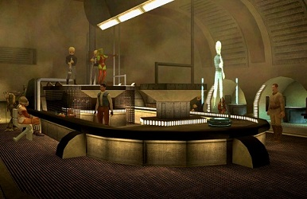
- Anchorhead Cantina: Sit down and relax with some food and live music. The cantina will resemble the Anchorhead Cantina from Tattooine in the movies. It will incorporate a live band of Bith playing various Star Wars songs. The food and drinks served will be reminiscent of the Star Wars universe as well, including items such as blue milk, Wookie cookies, frozen carbonite bars (ice cream sandwiches), and more. The menu will mostly consist of "quick eats," such as drinks and snacks, but will also serve some more substantial staples and affordable options such as pizza and chicken tenders.
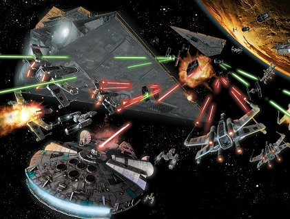
- Starship Battle: The Starship Battle ride will simulate a space battle while engaging the riders. Each car will look like a Rebel X-Wing and hold two guests. It will not be entirely enclosed, and each rider will have their own laser blaster to aim and shoot in front of them, moving along slowly on a set track. Various star ships will be moving around them with targets on them. Smaller ships such as TIE fighters will only take a single "hit," while larger ships such as Star Destroyers will take several hits before being destroyed. Since the ride will be indoors and be fairly dark to represent space, when a ship is shot down, it will no longer light up so it looks like it's gone. The car will keep score of each rider's points, and will also add their scores together so they can see how each car compared in a high score table on a large screen at the end of the ride.
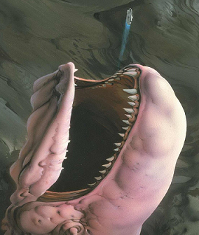
- Space Slug Shooter: This ride will hold about a dozen people. It will be a large ship that looks like the Milennium Falcon. It will go along a set track through space for a while until it comes upon an asteroid. On that asteroid will be the Space Slug, which will engulf the Milennium Falcon and try to eat it. To represent being eaten, the ship will then be dropped, free falling into the Space Slug's mouth, jerking up and down and all around for a while, before shooting back out into space again to escape.
Family Entertainment Center:
Evaluation Criteria:
- It must be affordable.
- It must have simple fun.
- It must be casual.
- It must be convenient to draw regular customers.
Concept:
- The Star Wars family entertainment center will be a casual place for families and friends to gather. It will be affordable enough for people to return regularly, and not just visit on special ocassions (like birthdays). It will appeal to a wide audience of ages, and include activites that appeal to both children and adults. Some of the main attractions will include food, indoor laser tag, an arcade, indoor bowling, outdoor mini golf, and indoor play equipment (mostly for the kids).
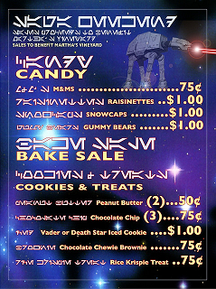
- Food: The family entertainment center will have to serve food in order to get people to come and stay for extended periods. It will be open during lunch and dinner hours, so it won't serve breakfast. It be very casual dining, and allow people to bring the food to various locations around the center, so they can set up a designated ares to hangout with their friends or family. The kitchen and ordering area will be located in the center of the indoor complex, allowing people to easily access food regardless of what activity they may be focusing on. Menu items will include various pizzas, salads, burgers, French fries, fountain drinks, cookies, other snacks and more.
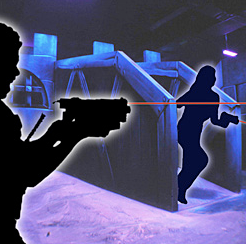
- Indoor Laser Tag: The laser tag will be based indoors, allowing people to play in the dark both during the day and at night. It will feature two main areas inside, representing "bases" that two opposing teams can use - the Rebels and the Empire. Structures inside will be two stories tall, but will be use ramps instead of stairs so people don't trip in the dark. Lighting will be sparse, and will consist mostly of "black" lighting (UV bulbs). Almost everything such as the walls, floor, and ceiling will be painted black, with stars painted in day-glow paint all over, and the ocassional painting of a starship (X-wings, TIE fighters, etc). Players will have to wear a large vest that has laser sensors on the shoulders, front, and back, which has the blaster gun tethered to it with a wire.
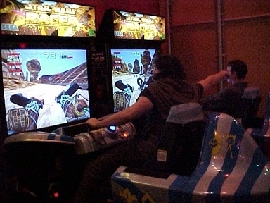
- Arcade: The arcade will be like a typical arcade, including various forms of games. There will be classic arcade cabinets such as Pacman and Galaga, as well as more modern fighting games like Marvel vs Capcom or Street Fighter. There will also be a focus on Star Wars games, such as the Pod Racer arcade. Other games will be more physical such as air hockey tables and billiards tables. Instead of requiring tokens or quarters to play, guests will be able to add credits to a card through a machine, which will take cash and credit cards for convenience. It will also keep track of virtual tickets which can be redeemed for prizes, more credits, or food.
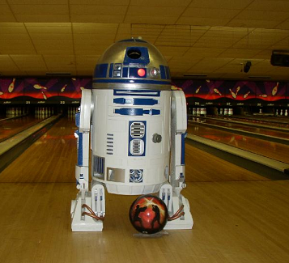
- Indoor Bowling: The bowling alley will be included inside the main indoor complex. It will have at least 50 lanes to accomodate a lot of guests, but not too many since there are also several other activities for people to be doing. There will be attendants at a counter where people can pay for games and rent shoes, like a typical bowling alley. Guests will also be allowed to bring food over to their lanes, as long as they don't take it beyond a certain line (designated on the floor) to avoid any spills and crumbs on the slippery bowling surface. There will be "normal" games going on during the day and early evening, but after 9 PM, there will be more "party" games where the games are play regularly, but the lighting will be "black" light based and the music will be louder.
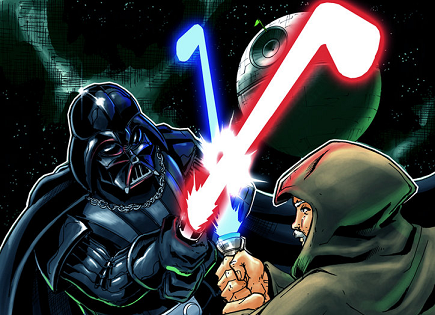
- Outdoor Mini Golf: The outdoor mini golf will be the usual 18 holes. There will be a few attendants at a small structure where guests will be able to pay and choose their putter and ball. The balls will be Star Wars themed, and will look like Stormtrooper helmets, Darth Vader's helmet, Yoda, and other character heads. Each hole will be thoroughly decorated to represent the various venues in the Star Wars movies. For example, a hole and the surrounding turf may be decorated like Tattooine, with sand-colored "grass," while another may have tall trees around it along with a pond and a half-submerged X-Wing to look like Dagobah.
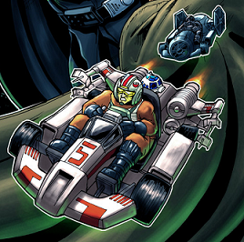
- Starship Go Karts: A family entertainment complex isn't complete without go karts. The go karts will each look like different starships, mostly X-Wings and TIE Fighters. The track will look like the outside of the Death Star as they race to be the first to the exhaust port. Each race will be three laps long, and will run for approximately 10 minutes total. There will be a dozen racers at a time, 6 Rebels and 6 Imperials.
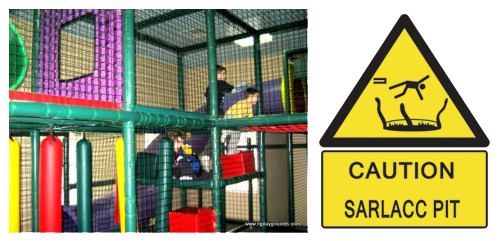
- Indoor Play Area: For the littler kids, there will also be an indoor play area. This will include lots of slides and tubes for the kids to climb in and on, along with a ball pit (Sarlacc Pit) and zip line. It will also have monkey bars, and just about everything will be covered in foam padding so that children won't hurt themselves on exposed metal bars or any sharp corners.
Sports Complex (Future):
Evaluation Criteria:

- It must be exciting for the non-participants.
- It must be safe for both participants and non-participants.
- It must be suspenseful.
Concept:
- My plan for a sports complex is set in the future. In the future, hopefully more technology that is used in the Star Wars universe will be readily available, such as holograms, lightsabers, droids, and more. I would like to create a sports complex that is basically an entire olympic arena for the Jedi Olympics. It will house fields, rings, and other areas to accomodate several types of sports and competive games.

- Petranaki Arena: One of the largest sections will be the Petranaki arena, which will resemble the arena by the same name on the planet Geonosis. The arena will revolve around events such as gladitorial combat, where individuals (mostly Jedi) will face off against an army of droids. The battles will be challenging but will be meant to be entertaining due to the violence being against non-living things, or droids. The arena will be surrounded by thousands of seats for spectators to watch.

- Lightsaber Fencing: The classic sport of fencing with a twist - lightsabers. Opponents will face off as they usually do, wearing protective armor against fatal lightsaber slashes and stabs, testing their swordsmanship skills against one another. The ring will otherwise be a fairly standard ring, just with an unbiased droid referee. This area will be much smaller compared to the main Petranaki Arena, and will hold only a couple hundred spectators.

- Bowcaster Archery: Archery will now be done with bowcasters instead of typical longbows and shortbows. Bowcasters are basically crossbows that fire metal bolts enveloped in energy. The archery section will be outdoors, and will feature several "lanes" for competitors to fire down at various targets. The shooting and spectating area will be mostly grass, surrounded by trees to help make it quiet from the surrounding sports that may be going on at the same time. Spectators will only be able to watch from behind the shooters and to the sides, not behind the targets from safety reasons.

- Speederbike Racing: Speederbike racing will be somewhat of a mix between motorcycle racing and cycling with bikes. Races will be held on a couple of different tracks, including a paved, standard 3-turn track, as well as a much curvier, dirt racetrack. The racers will each have a sponsored bike and race for a certain amount of laps, depending on the race taking place and the class of people competing. Spectators will be able to enjoy the view from stadium seating around about a third of each track.

- Battle Droids: Droids will be able to face off in arenas, or be pitted against each other. Battles will be done in various classes based on weight and level of artificial intelligence. Some droids may have no AI, and may be controlled completely by humans with remote controls. Others may have their own AI and can fight completely on their own. Droids ranking with similar AI will fight against each other to make the fights more fair. Droids will also be ranked on weight classes, so smaller lightweight droids don't have to fight in an unfair battle against a giant. The robot arena will be encased in fencing and plexiglass, protecting the spectators just beyond it. Seating will surround the battle pit entirely, and some VIP guests will be allowed to stand right next to the battle taking place.

- Tauntaun Polo: Polo will be played on tauntauns instead of horses. Tauntauns can be ridden with a saddle and reigns just like horses. Regardless of climate, tauntauns are also the preferred mount by many for being reliable and easy to train. All players will use tauntauns instead of having various creatures to make it more fair.
Retailtainment:
Evaluation Criteria:
- It has to be enjoyable to go to regularly.
- It has to allow the imagination to work.
- It must teach enough to not alienate non-enthusiasts.
- It must be for all ages.
Concept:
- My retailtainment center will be an outdoor shopping mall that's just about entirely Star Wars themed. It will have various stores and places where people can grab a bite to eat. Some restaurants will be more casual than others, and there will also be some smaller shops and concession stands for snacks and really quick eats. Some of the shops will carry general Star Wars merchandise, but there will also be smaller sspecialty shops for unique items and experiences.
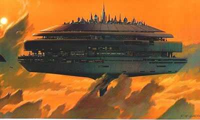
- Cloud City Restaurant: The Cloud City Restaurant will be one of the focal points of the center. It will be a very tall structure, and will bring guests up to the main restaurant area by elevator. Reservations and accomodations will be made at the base of the tower to save on unnecessary traffic to and from the tower. The tower will be a sit-down restaurant that slowly revovles, so guests can get a good view of their surroundings without just having to face out a window in one direction the entire time. The elevators, kitchen, and bathrooms will remain fixed in the center, while the tables will essentially be on a donut shape that slowly turns. The menu will be fairly casual, featuring burgers, sandwiches, steaks, and more.

- Lightsaber Shop: The lightsaber shop will be a smaller specialty shop that allows guests to build their own custom lightsaber. The shop will have bins of various parts in all different shapes, sizes, and colors. You will be able to choose your blade color, hilt, and more. There will be a couple of options: a simpler option with less parts for children to build, and a more complex option with more complex parts for adults, more advanced children, or other enthusiasts. The simpler side will be along one wall, while the more complex side will be along the opposite wall. Customers will be charged for their lightsaber depending on the parts used. It will also sell extra accessories such as stands for you to place your lightsaber on when you're not using it.
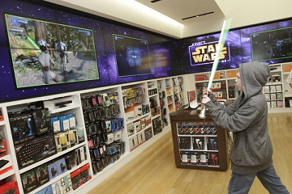
- Star Wars Store: The Star Wars Store will be a very large store within the retail center. It will be one of the main attractions since it will attract a wide audience, offering all sorts of Star Wars merchandise for all ages. The front of the store will look like the Death Star, and it will be two stories tall. The inside will sell plushies, toy lightsabers, shirts, coffee mugs, and more. People will be able to interact with a lot of the merchandise, such as playing with lightsabers before buying, or test running remote controlled droid toys.
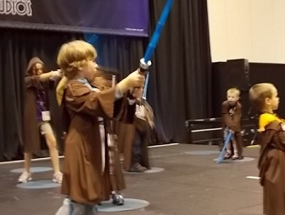
- Young Jedi Training: Enroll your child to become a Jedi. Your little Padawans will get their own Jedi garb along with their very own lightsaber to practice with. They will be taught the way of the Jedi through concepts and hands-on training. They will learn how to wield the lightsaber and also begin their training with The Force by learning how to trust their instincts and rely on their senses.
Role Playing Game:
Evaluation Criteria:
- It must be imaginative.
- It must be funny.
- It must reference the films.
- It must be easy to pick up.
- It must allow players to help or hurt each other.
Concept:
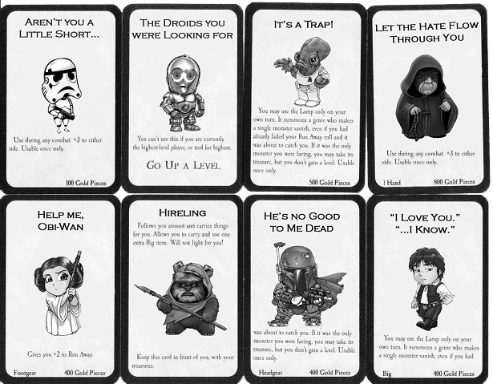
- The Star Wars card game will be a standard tabletop game. It will be played with only cards and ocassionally a couple die. Various game pieces will be included to represent each player, shaped like little figures of characters from the Star Wars movies, such as Obi-Wan, Luke, Darth Vader, Chewbacca, etc. Each player will then be the race of each piece (human, wookie, ewok, etc), but will be able to also have a class, decided from cards. The cards will be included in the deck, and will be random, but can also be changed during gameplay.
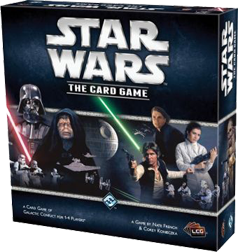
- The cards will be divided into two main piles, the loot pile and the event pile. The loot pile will have various items that people will be able to use as items, which can benefit them and aid them in battles. Some cards will be equipped as long as the player would like, and others will only be able to be used once, which will be denoted on the card.
- Players can play as long as they like. The game is very lenient and allows the players to set rules such as this. Most common games will be played to 10 or 20 "levels." Each player's character will start off on level one, and they will gain levels from defeating enemies in the event pile, and can gain levels under certain circumstances when they aid other players as well. The game pieces will be move on a board that is a grid of numbers in order, allowing the players to just slide their character to a new number, representing their current level. This makes it easier for players to keep track of what level they currently are and everyone playing can keep track of who is currently in the lead or not.